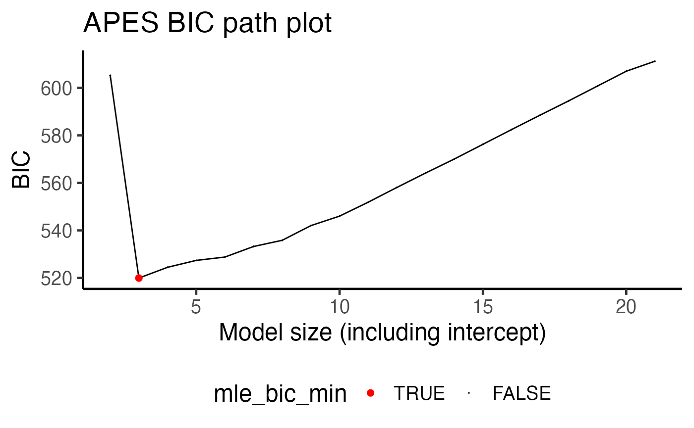

vignettes/APES.Rmd
APES.RmdAPproximated Exhaustive Search (APES) is a variable selection method for Generalised Linear Models (GLMs). The main motivation behind this work is to improve the speed of exhaustive variable selection for GLMs. The accompanying paper is Wang et. al. (2019).
Suppose we have simulated a data with 500 rows and 20 predictor variables, and we have fitted a logistic regression model against a binary response variable, y. This is what we termed as a “full” model, i.e. a model with all available predictor variables. We know that some of these variables are the true data generating variables and looking at the model summary, we see that these variables with p-values less than 0.05. So far, so good! However, we can also expect to see some variables with p-values also below the 0.05 cut-off by chance. In this case, is it still reasonable to also include these variables in our final selected model?
library(APES) set.seed(123) n = 500 p = 20 k = 1:p beta = c(1, -1, rep(0, p-2)) x = matrix(rnorm(n*p), ncol = p) colnames(x) = paste0("X", 1:p) y = rbinom(n = n, size = 1, prob = expit(x %*% beta)) data = data.frame(y, x) ## Fitting a full model model = glm(y ~ ., data = data, family = "binomial") summary(model) #> #> Call: #> glm(formula = y ~ ., family = "binomial", data = data) #> #> Deviance Residuals: #> Min 1Q Median 3Q Max #> -2.3584 -0.8018 0.1758 0.7647 2.6839 #> #> Coefficients: #> Estimate Std. Error z value Pr(>|z|) #> (Intercept) 0.0939968 0.1150063 0.817 0.4137 #> X1 1.3208484 0.1473539 8.964 < 2e-16 *** #> X2 -1.1514327 0.1408347 -8.176 2.94e-16 *** #> X3 -0.1374777 0.1199204 -1.146 0.2516 #> X4 -0.1833097 0.1131186 -1.621 0.1051 #> X5 0.0592351 0.1245528 0.476 0.6344 #> X6 -0.0042151 0.1116729 -0.038 0.9699 #> X7 0.0333918 0.1140984 0.293 0.7698 #> X8 0.0544283 0.1150397 0.473 0.6361 #> X9 -0.0002908 0.1185977 -0.002 0.9980 #> X10 0.0070470 0.1191136 0.059 0.9528 #> X11 0.2215954 0.1197092 1.851 0.0642 . #> X12 -0.0181208 0.1129557 -0.160 0.8725 #> X13 0.2642200 0.1134691 2.329 0.0199 * #> X14 -0.1555926 0.1167591 -1.333 0.1827 #> X15 0.1706575 0.1209544 1.411 0.1583 #> X16 0.2097983 0.1134567 1.849 0.0644 . #> X17 -0.0967993 0.1118631 -0.865 0.3869 #> X18 -0.0460395 0.1103086 -0.417 0.6764 #> X19 -0.0127950 0.1170941 -0.109 0.9130 #> X20 0.0626407 0.1140707 0.549 0.5829 #> --- #> Signif. codes: 0 '***' 0.001 '**' 0.01 '*' 0.05 '.' 0.1 ' ' 1 #> #> (Dispersion parameter for binomial family taken to be 1) #> #> Null deviance: 692.76 on 499 degrees of freedom #> Residual deviance: 480.70 on 479 degrees of freedom #> AIC: 522.7 #> #> Number of Fisher Scoring iterations: 5
The question of which variable(s) a practitioner should select is very common in the area of variable selection. One of the most intuitive variable selection method is to enumerate all possible combination of variables and select the best corresponding model using a fit statistic. This is known as exhaustive variable selection. In total, there are \(2^p\) possibilities to explore, with \(p\) being the number of predictors. However, in performing an exhaustive variable selection for this data, we will be looking through 2^20 = 1,048,576 models! If each model takes one thousandth of a second to compute, then this exhaustive variable selection will take about 15 minutes to run — seems too long!
At its core, APES is designed to speed up this variable selection procedure. APES will first convert the full logistic model into a linear model. The reason for doing this is that the exhaustive variable selection can be performed much faster in the linear model space. In addition, linear models can benefit from best-subset algorithms which can search for the best linear model without searching through all \(2^p\) candidate models. By default, APES uses the leaps-and-bound algorithm (from the leaps package) and mixed integer optimisation (from the bestsubset package) algorithm as the best-subset algorithms of choice. After obtaining a set of best-fit models, APES will convert the results back to into logistic models and show the best model of each size. While the word “best” can be subjective depending on the data context, in our example, we define this word as the model with the smallest information criterion value with the most common choices being the Akaike Information Criterion (AIC) and the Bayesian Information Criterion (BIC).
It is important to note that APES only returns the best approximation to the exhaustive search, however, through extensive simulations in our paper, we have demonstrated that APES tends to always return informative model that is close to a genuine exhaustive search.
The APES package is designed to provide an user-friendly interface to perform APES variable selection. The main function in the APES package is the apes function which accepts a glm object in R. This is typically the “full model” with all available predictors fitted.
The apes function returns a apes class object. By default, APES prints the model selected by the AIC and BIC and the time taken. There are extra computed results in the apes object which a user might be interested in further exploring.
print(apes_result) #> Time taken: 0.0001365503 minutes #> #> APES - AIC selected the following variables #> intercept X1 X2 X3 X4 X5 X6 X7 #> 0.082 1.284 -1.137 0.000 -0.161 0.000 0.000 0.000 #> X8 X9 X10 X11 X12 X13 X14 X15 #> 0.000 0.000 0.000 0.221 0.000 0.252 -0.162 0.000 #> X16 X17 X18 X19 X20 #> 0.208 0.000 0.000 0.000 0.000 #> #> APES - BIC selected the following variables #> intercept X1 X2 X3 X4 X5 X6 X7 #> 0.064 1.226 -1.093 0.000 0.000 0.000 0.000 0.000 #> X8 X9 X10 X11 X12 X13 X14 X15 #> 0.000 0.000 0.000 0.000 0.000 0.000 0.000 0.000 #> X16 X17 X18 X19 X20 #> 0.000 0.000 0.000 0.000 0.000 names(apes_result) #> [1] "apes_model_df" "apes_mle_beta" "apes_mle_beta_binary" #> [4] "time_used" "selected_model_beta" "model_avg_beta" #> [7] "response_tibble"
The most important output is apes_model_df, which is a data.frame/tibble of the best model of each model size computed by APES.
apes_result$apes_model_df #> # A tibble: 20 x 7 #> model_name model_size ic_opt_models apes_mle_loglike mle_aic mle_bic status #> <chr> <dbl> <chr> <dbl> <dbl> <dbl> <chr> #> 1 apes_model… 2 "" -296. 597. 605. leaps_… #> 2 apes_model… 3 "apes_min_bi… -251. 507. 520. leaps_… #> 3 apes_model… 4 "" -250. 508. 524. leaps_… #> 4 apes_model… 5 "" -248. 506. 527. leaps_… #> 5 apes_model… 6 "" -246. 503. 529. leaps_… #> 6 apes_model… 7 "" -245. 504. 533. leaps_… #> 7 apes_model… 8 "apes_min_ai… -243. 502. 536. leaps_… #> 8 apes_model… 9 "" -243. 504. 542. leaps_… #> 9 apes_model… 10 "" -242. 504. 546. leaps_… #> 10 apes_model… 11 "" -242. 506. 552. leaps_… #> 11 apes_model… 12 "" -242. 508. 558. leaps_… #> 12 apes_model… 13 "" -242. 509. 564. leaps_… #> 13 apes_model… 14 "" -242. 511. 570. leaps_… #> 14 apes_model… 15 "" -242. 513. 576. leaps_… #> 15 apes_model… 16 "" -242. 515. 582. leaps_… #> 16 apes_model… 17 "" -241. 517. 589. leaps_… #> 17 apes_model… 18 "" -241. 519. 595. leaps_… #> 18 apes_model… 19 "" -241. 521. 601. leaps_… #> 19 apes_model… 20 "" -241. 523. 607. leaps_… #> 20 apes_model… 21 "" -240. 523. 611. leaps_…
By default, aoes will always include the intercept term in the variable selection, and thus the selected models are always of size two (one intercept and one variable) and above. You may also be interested in plotting apes_result using the generic function plot
plot(apes_result)

The example above is a simple simulation to illustrate the basic underlying theory of APES and the apes object. Please see a birth weight data example and a diabetes data example where we will demonstrate the performance of APES using bootstrap sampling to assess model stability.
sessionInfo() #> R version 4.0.2 (2020-06-22) #> Platform: x86_64-apple-darwin17.0 (64-bit) #> Running under: macOS Catalina 10.15.7 #> #> Matrix products: default #> BLAS: /Library/Frameworks/R.framework/Versions/4.0/Resources/lib/libRblas.dylib #> LAPACK: /Library/Frameworks/R.framework/Versions/4.0/Resources/lib/libRlapack.dylib #> #> locale: #> [1] en_US.UTF-8/en_US.UTF-8/en_US.UTF-8/C/en_US.UTF-8/en_US.UTF-8 #> #> attached base packages: #> [1] stats graphics grDevices utils datasets methods base #> #> other attached packages: #> [1] APES_0.6.0 #> #> loaded via a namespace (and not attached): #> [1] gtools_3.8.2 tidyselect_1.1.0 xfun_0.18 purrr_0.3.4 #> [5] reshape2_1.4.4 listenv_0.8.0 splines_4.0.2 lattice_0.20-41 #> [9] colorspace_1.4-1 vctrs_0.3.4 generics_0.0.2 htmltools_0.5.0 #> [13] yaml_2.2.1 utf8_1.1.4 survival_3.1-12 rlang_0.4.8 #> [17] pkgdown_1.6.1.9000 pillar_1.4.6 glue_1.4.2 RColorBrewer_1.1-2 #> [21] lifecycle_0.2.0 plyr_1.8.6 stringr_1.4.0 munsell_0.5.0 #> [25] gtable_0.3.0 ragg_0.4.0 future_1.19.1 codetools_0.2-16 #> [29] leaps_3.1 memoise_1.1.0 evaluate_0.14 labeling_0.3 #> [33] knitr_1.30 forcats_0.5.0 parallel_4.0.2 fansi_0.4.1 #> [37] furrr_0.1.0 Rcpp_1.0.5 scales_1.1.1 backports_1.1.10 #> [41] desc_1.2.0 farver_2.0.3 systemfonts_0.3.2 fs_1.5.0 #> [45] textshaping_0.1.2 ggplot2_3.3.2 digest_0.6.25 stringi_1.5.3 #> [49] dplyr_1.0.2 ggrepel_0.8.2 grid_4.0.2 rprojroot_1.3-2 #> [53] cli_2.0.2 tools_4.0.2 magrittr_1.5 tibble_3.0.3 #> [57] crayon_1.3.4 tidyr_1.1.2 pkgconfig_2.0.3 ellipsis_0.3.1 #> [61] Matrix_1.2-18 assertthat_0.2.1 rmarkdown_2.4 R6_2.4.1 #> [65] globals_0.13.0 compiler_4.0.2